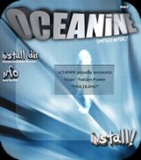

|
introduction
Cet article présente juste un survol de l'utilisation
des " GFX " ( ou Graphic Effect ) dans le monde du Cracking et du Warez :
Chaque exemple donné ( cracktros, NFO Art, ... ) pouvant bénéficier, à lui seul, d'un
exposé ; chose que j'espère faire un jour :)
GFX et Warez
* Cracktros et Scène Démo
Même si les nouveaux OS de Microsoft
sont de moins en moins compatibles avec leurs versions précédentes, vous aurez sans doute l'occasion
de tomber sur ces petits exe et de pouvoir regarder une " Cracktro " ( compression de " Crack "
et " Intro " ) de Fairlight, d'Hybrid, de Class, de Paradigm, ...
Ces petits programmes graphiques accompagnant les applications piratées sont vraisemblablement apparus sur
les ordinateur Commodore 64, puis Amiga et Atari.
Ils fûrent ensuite exportés sur PC, quand celui-ci s'avéra plus intéressant en terme
de performances et de création, ce qui n'était au départ, pas le cas.
Aujourd'hui, des Cracktros sont disponibles sur des plateformes aussi variées que Playstation, XBox, etc...
Elles mélanges graphisme, animation et musique.
Leur intérêt s'avéra tellement important qu'une Scène Démo en sortit et cette
fois-ci, toute à fait légal.
La Scène Démo a ses afficionados et ses rendez-vous, mélant antiques C64, Amiga et PC dernière
génération.
|
|
Cracktro - Hybrid
 |
|
|
|
|
* NFO ART
A la base, les fichiers NFO étaient de simple texte d' information pour lister le contenu d'archives, etc...
Le monde Warez les a, pour des raisons pratiques, utilisés puis l'a personnalisé, après quelques
années, passant du nom de groupe écrit avec des tirets et des " / " à des motifs
puis des dessins beaucoup plus complexes et esthétiques.
Aujourd'hui, même si l'extension NFO ne se justifie plus ( ce fichier est un relicat de l'ancien temps ),
il reste omniprésent que ce soit dans le monde Warez et le monde du Cracking.
On en est même arrivé à la création d'une Scène " ASCII " dont l'un
des fers de lance reste le groupe allemand SAC ( Superior Art Creations ) qui produisit bon nombre des NFO des
groupes Warez et Cracking mais aussi de Cracktros, ...
Il est même très fréquent de retrouver en signature : " Roy " ( retiré ),
" Ferrex " ou " EBoy " de SAC.
* Installeur Warez
Avec l'avénement des packagers et autres assistants d'installation pour applications, le programme n'était
plus accessible sans être préalablement installé.
Le problème n'était, en soit, pas insurmontable. La plupart des packagers et assistants étant
en vente, il suffisait de se procurer le même que celui utilisé sur le jeu ou l'application pour reconstruire
une interface, certes recopiée, mais identique avec le logciel cracké ou copié.
Toutefois, pour des raisons de temps mais aussi afin de personnaliser le produit Warez, de nombreux grands groupes,
décidérent de créer leurs propres Installeurs/Packagers.
Si le principe de ces installeurs est nettement plus basique ( décompression ZIP, RAR, ACE, ... des fichiers,
dans un répertoire du disque dur ), certains sont de vrais bijoux d'esthétismes et d'originalité,
utilisant quelques effets empruntés à la Scène Démo. ( musique, animation, ... )
|
|
|
|
|
| |
|
Installer - PARADIGM 1997
|
|
|
|
|
|  |
|
Installer - OCEANINE 2002
|
|
|
|
GFX et Cracking
Si les premiers groupes " sérieux " Warez
sont apparus au tout début des années 80,
les groupes de Cracking sont beaucoup plus
récents. (UCF : ~1994)
Le fait vient qu'avec l'arrivée d'Internet, les Sharewares se sont multipliés et que le simple utilisateur
pouvait facilement les récupérer de chez lui.
Il suffisait donc de distribuer par le même moyen des cracks et non plus l'application crackée comme
pour les groupes Warez.
En matière de GFX, les groupes de Cracking se trouvaient avec un support plus réduit ( crack, keygen,
... ) fort peu propice pour placer une animation, etc...
Toutefois, certaines personnes montrèrent que la création GFX avaient encore sa place dans le Cracking.
* Da Vinci : La " Phrozen Touch "
En 1998, Phrozen Crew voit emmerger l'un de ses membres, un prénommé DaVinci.
Placé à la division GFX et aussi Cracking, sa
contribution graphique va donner au groupe un essor esthétique grâce à une touche inimitable
et un réel sens de la création artistique.
C'est d'ailleurs durant sa présence que Phrozen Crew connaitra son Age d'Or et une célébrité
hors Scène que peu d'autres groupes, même nettement meilleurs peuvent se targer d'avoir ou d'avoir
eu.
Désormais, retiré du groupe depuis quelques années, DaVinci a laissé une trace tellement
forte qu'elle perdure encore.
Ses GFX sont toujours conservés dans l'Elite Toplist et pour Phrozen Crew.
|
|
|
|
|
|
DaVinci - The Elite Toplist Logo
| |
|
DaVinci - The Phrozen Goddess
| |
|
* Templates et logos
Si le monde Warez connait une compétition acharnée, et pousse à l'identification poussée
sur les " releases "; dans le Cracking, chacun met sa petite touche de façon individuelle sur
Cracks et Keygens ou en conservant un modéle commun comme pour DAMN.
|
Keygen - DAMN Template Principal
|
|
|
|
Keygen - Exemple The Millenium Group
|
|
On retrouve aussi les GFX pour identifier les groupes ou des
personnes.
|
|
|
|
Logo - Groupe Unpacking Gods
|
|
Logo - Groupe CoRE
 |
|
|
|
|
|
|
liens
Le site de Defacto dispose d'une quantité énorme
d'archives sur la Scène Warez et tout ce qui s'y rattache, n'hésitez pas à le consulter, c'est
une mine d'or.
|